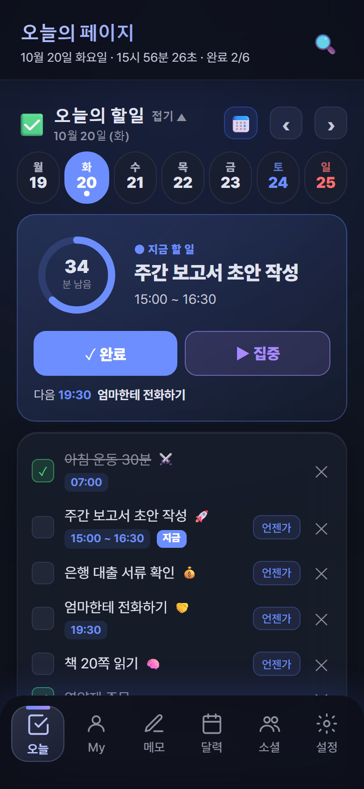

<title>DayMate 오늘 탭 시안</title>
<meta name="claude:viewport-fit-sides" content="cover">
<link rel="preconnect" href="https://fonts.googleapis.com">
<link rel="preconnect" href="https://fonts.gstatic.com" crossorigin>
<link rel="stylesheet" href="https://fonts.googleapis.com/css2?family=IBM+Plex+Sans+KR:wght@400;500;600;700&family=IBM+Plex+Mono:wght@500&display=swap">
<style>
/* Layout: 문서는 한 줄 읽기 폭(760px), 시안 비교만 넓게(1240px) 펼친다. 시안 폰 화면은 문서 테마와 따로 다크/라이트 전환 */
:root{
  --bg:#F2F3F7; --paper:#FFFFFF; --ink:#151827; --sub:#4B5068; --muted:#868BA2; --line:rgba(21,24,39,.10);
  --accent:#3D5BE8; --accent-soft:rgba(61,91,232,.09); --good:#1C9A55; --warn:#B7791F; --bad:#C2453D;
  --f-body:'IBM Plex Sans KR','Pretendard Variable','Apple SD Gothic Neo','Malgun Gothic',sans-serif;
  --f-mono:'IBM Plex Mono',ui-monospace,Consolas,monospace;
  color-scheme:light;
}
@media (prefers-color-scheme:dark){:root:not([data-theme="light"]){
  --bg:#0C0E14; --paper:#151821; --ink:#E9EBF3; --sub:#B3B7C9; --muted:#7D8297; --line:rgba(233,235,243,.10);
  --accent:#8EA2FF; --accent-soft:rgba(142,162,255,.12); --good:#4CCB85; --warn:#E3AD4F; --bad:#F08479; color-scheme:dark}}
:root[data-theme="dark"]{
  --bg:#0C0E14; --paper:#151821; --ink:#E9EBF3; --sub:#B3B7C9; --muted:#7D8297; --line:rgba(233,235,243,.10);
  --accent:#8EA2FF; --accent-soft:rgba(142,162,255,.12); --good:#4CCB85; --warn:#E3AD4F; --bad:#F08479; color-scheme:dark}
*{box-sizing:border-box}
body{background:var(--bg);color:var(--ink);font-family:var(--f-body);font-size:16px;line-height:1.7;
  padding-left:max(16px,env(safe-area-inset-left,0px));padding-right:max(16px,env(safe-area-inset-right,0px));padding-block:40px 80px;word-break:keep-all}
.doc{max-width:760px;margin:0 auto}
.wide{max-width:1240px;margin:0 auto}
.eyebrow{font-family:var(--f-mono);font-size:12px;letter-spacing:.06em;color:var(--muted)}
h1{font-size:clamp(30px,5vw,42px);line-height:1.25;margin:10px 0 14px;font-weight:700;text-wrap:balance;letter-spacing:-.01em}
h2{font-size:24px;line-height:1.35;margin:72px 0 14px;font-weight:700;text-wrap:balance}
h3{font-size:18px;margin:0 0 6px;font-weight:700}
p{margin:0 0 14px;color:var(--sub)}
.lead{font-size:18px;color:var(--sub)}
b,strong{color:var(--ink);font-weight:600}
.note{font-size:14px;color:var(--muted)}
code{font-family:var(--f-mono);font-size:.86em;background:var(--accent-soft);padding:1px 5px;border-radius:5px}

/* 진단 */
.diag{display:grid;grid-template-columns:300px minmax(0,1fr);gap:32px;align-items:start;margin-top:20px}
.diag figure{margin:0;position:sticky;top:calc(env(safe-area-inset-top,0px) + 16px)}
.diag figure img{width:100%;border-radius:28px;border:1px solid var(--line);display:block}
.diag figcaption{font-size:13px;color:var(--muted);margin-top:8px;text-align:center}
.causes{list-style:none;padding:0;margin:0;display:flex;flex-direction:column;gap:0}
.causes li{padding:18px 0;border-top:1px solid var(--line);display:grid;grid-template-columns:28px minmax(0,1fr);gap:10px}
.causes li:first-child{border-top:0;padding-top:0}
.causes .n{font-family:var(--f-mono);font-size:13px;color:var(--muted);padding-top:3px}
.causes h3{font-size:17px}
.causes p{margin:0;font-size:15px}
.fix{display:block;margin-top:6px;font-size:15px;color:var(--ink)}
.fix::before{content:"→ ";color:var(--accent);font-weight:700}

/* 시안 비교 */
.ctrl{display:flex;flex-wrap:wrap;gap:10px;align-items:center;margin:18px 0 24px}
.seg-btn{display:inline-flex;border:1px solid var(--line);border-radius:10px;overflow:hidden;background:var(--paper)}
.seg-btn button,.btn{font:inherit;font-size:14px;font-weight:600;padding:8px 14px;border:0;background:transparent;color:var(--sub);cursor:pointer}
.seg-btn button[aria-pressed="true"]{background:var(--ink);color:var(--paper)}
.btn{border:1px solid var(--line);border-radius:10px;background:var(--paper);color:var(--ink)}
.btn:focus-visible,.seg-btn button:focus-visible{outline:2px solid var(--accent);outline-offset:2px}
.grid{display:grid;grid-template-columns:repeat(auto-fill,minmax(300px,1fr));gap:40px 28px}
.col{min-width:0;display:flex;flex-direction:column;gap:14px}
.col header{min-height:84px}
.tag{display:inline-block;font-family:var(--f-mono);font-size:11px;letter-spacing:.06em;padding:2px 8px;border-radius:99px;border:1px solid var(--line);color:var(--muted);margin-bottom:6px}
.tag.rec{background:var(--accent);border-color:var(--accent);color:#fff}
.col header p{font-size:14px;margin:0}
.pc{font-size:14px;margin:0;padding:0;list-style:none;display:flex;flex-direction:column;gap:6px}
.pc li{padding-left:22px;position:relative;color:var(--sub);line-height:1.55}
.pc li::before{position:absolute;left:0;top:0;font-weight:700}
.pc .p::before{content:"+";color:var(--good)}
.pc .c::before{content:"−";color:var(--bad)}
.refs{font-size:13px;color:var(--muted);margin:0}

/* 표 */
.tbl{overflow-x:auto;margin:16px 0;border:1px solid var(--line);border-radius:14px;background:var(--paper)}
table{border-collapse:collapse;width:100%;min-width:600px;font-size:14px}
th,td{text-align:left;padding:11px 14px;border-top:1px solid var(--line);vertical-align:top;line-height:1.55}
thead th{border-top:0;font-size:12px;font-family:var(--f-mono);letter-spacing:.04em;color:var(--muted);font-weight:500}
td:first-child{font-weight:600;white-space:nowrap}
td.old{color:var(--muted)}
.num{font-variant-numeric:tabular-nums}

/* 추천 구성 */
.stack{list-style:none;counter-reset:s;padding:0;margin:16px 0;display:flex;flex-direction:column}
.stack li{counter-increment:s;display:grid;grid-template-columns:36px minmax(0,1fr);gap:8px;padding:14px 0;border-top:1px solid var(--line)}
.stack li::before{content:counter(s);font-family:var(--f-mono);font-size:13px;color:var(--accent);padding-top:2px}
.stack li.hero{background:var(--accent-soft);border-radius:12px;padding:14px 12px;margin:4px -12px;border-top:0}
.stack li.hero + li{border-top:0}
.stack h3{font-size:16px;margin:0 0 2px}
.stack p{margin:0;font-size:15px}
.dec{display:flex;flex-direction:column;gap:14px;margin-top:16px}
.dec article{background:var(--paper);border:1px solid var(--line);border-radius:14px;padding:16px 18px}
.dec h3{font-size:16px}
.dec p{font-size:15px;margin:0 0 6px}
.dec .rec{color:var(--ink);font-size:15px}
.dec .rec::before{content:"추천 · ";color:var(--accent);font-weight:700}

@media (max-width:820px){
  .diag{grid-template-columns:minmax(0,1fr)}
  .diag figure{position:static;max-width:300px;margin:0 auto}
}

/* ─────────────── 폰 시안 (앱 단위 px, 큰글씨 1.1배로 확대해 보여 줌) ─────────────── */
.mk{--fz:1}
.phwrap{position:relative;width:100%;max-width:390px;margin:0 auto}
.ph{position:absolute;left:0;top:0;width:355px;height:740px;transform-origin:0 0;border-radius:30px;overflow:hidden;
  font-family:'Pretendard Variable',Pretendard,'IBM Plex Sans KR','Apple SD Gothic Neo','Malgun Gothic',sans-serif;
  background:var(--m-bg);color:var(--m-text);box-shadow:0 0 0 1px var(--line),0 18px 50px rgba(10,14,30,.18);
  --m-bg:#0F121B; --m-surf:#181C28; --m-surf2:#202536; --m-line:rgba(255,255,255,.07); --m-text:#ECEEF5; --m-sub:#A9AEC1; --m-muted:#747B91;
  --m-a:#7D95FF; --m-a-soft:rgba(125,149,255,.14); --m-a-ink:#0F121B; --m-done:#46C97C; --m-done-soft:rgba(70,201,124,.14); --m-amber:#E9B04A;
  --nav-bg:rgba(12,15,25,.92); --nav-on:#b8c3ff; --nav-off:#8e90a1; --nav-on-bg:linear-gradient(135deg,rgba(184,195,255,.18),rgba(109,136,255,.10)); --nav-ring:rgba(184,195,255,.22);
  color-scheme:dark}
.mk[data-mode="light"] .ph{
  --m-bg:#F4F5F9; --m-surf:#FFFFFF; --m-surf2:#ECEEF4; --m-line:rgba(16,20,40,.08); --m-text:#121527; --m-sub:#4A5068; --m-muted:#868CA3;
  --m-a:#3F5FF0; --m-a-soft:rgba(63,95,240,.09); --m-a-ink:#fff; --m-done:#1E9E57; --m-done-soft:rgba(30,158,87,.10); --m-amber:#B9790F;
  --nav-bg:rgba(255,255,255,.95); --nav-on:#2f45d6; --nav-off:#6b7290; --nav-on-bg:linear-gradient(135deg,rgba(75,111,255,.16),rgba(75,111,255,.08)); --nav-ring:rgba(75,111,255,.3);
  color-scheme:light}
:where(.ph) button{font:inherit;color:inherit;background:none;border:0;padding:0;cursor:pointer}
.ph button:focus-visible{outline:2px solid var(--m-a);outline-offset:2px;border-radius:8px}
.scr{position:absolute;inset:0;overflow-y:auto;overflow-x:hidden;padding:0 0 110px;scrollbar-width:none}
.scr::-webkit-scrollbar{display:none}
.shot{position:absolute;inset:0;width:100%;height:auto;display:block}

/* 하단 메뉴 — 지금 앱과 동일 */
.nav{position:absolute;left:0;right:0;bottom:0;display:flex;justify-content:space-around;padding:10px 8px 22px;border-radius:24px 24px 0 0;
  background:var(--nav-bg);backdrop-filter:blur(24px);-webkit-backdrop-filter:blur(24px);box-shadow:0 -4px 32px rgba(75,111,255,.18);z-index:5}
.nav button{display:flex;flex-direction:column;align-items:center;gap:4px;font-size:12px;color:var(--nav-off);padding:6px 10px;border-radius:16px;position:relative;font-weight:500}
.nav button.on{color:var(--nav-on);background:var(--nav-on-bg);box-shadow:inset 0 0 0 1px var(--nav-ring);font-weight:700}
.nav button.on::before{content:"";position:absolute;top:0;left:50%;transform:translateX(-50%);width:24px;height:3px;border-radius:99px;background:linear-gradient(90deg,#6C8EFF,#A78BFA)}
.nav svg{fill:none;stroke:currentColor;stroke-width:1.8;stroke-linecap:round;stroke-linejoin:round}

/* 공통 시안 부품 */
.pad{padding-left:20px;padding-right:20px}
.ico{width:20px;height:20px;fill:none;stroke:currentColor;stroke-width:1.8;stroke-linecap:round;stroke-linejoin:round;flex-shrink:0}
.lbl{display:flex;align-items:center;gap:7px;font-size:13px;font-weight:700;color:var(--m-muted);letter-spacing:.02em;margin:34px 20px 10px}
.lbl .ico{width:16px;height:16px}
.lbl .r{margin-left:auto;font-weight:600;letter-spacing:0;color:var(--m-muted)}
.chk{width:44px;height:44px;margin:-9px -9px -9px -9px;display:grid;place-items:center;flex-shrink:0}
.chk i{width:26px;height:26px;border-radius:50%;border:2px solid var(--m-muted);display:grid;place-items:center;transition:background .18s,border-color .18s,transform .24s cubic-bezier(.3,1.6,.5,1)}
.chk i::after{content:"";width:10px;height:6px;border-left:2.4px solid var(--m-a-ink);border-bottom:2.4px solid var(--m-a-ink);transform:rotate(-45deg) translate(1px,-1px) scale(0);transition:transform .2s .06s}
.done .chk i,.chk.on i{background:var(--m-done);border-color:var(--m-done);transform:scale(1)}
.done .chk i::after,.chk.on i::after{transform:rotate(-45deg) translate(1px,-1px) scale(1);border-color:#fff}
.pop .chk i{animation:pop .32s cubic-bezier(.3,1.6,.5,1)}
@keyframes pop{0%{transform:scale(.8)}55%{transform:scale(1.18)}100%{transform:scale(1)}}
.t{position:relative;display:inline;background:linear-gradient(currentColor,currentColor) 0 58%/0% 1.5px no-repeat;transition:background-size .26s ease,color .2s}
.done .t{background-size:100% 1.5px;color:var(--m-muted)}
.meta{display:flex;flex-wrap:wrap;gap:4px 10px;font-size:13px;font-weight:500;color:var(--m-muted);margin-top:3px;font-variant-numeric:tabular-nums}
.meta .tm{color:var(--m-sub)}
.st{display:inline-flex;align-items:center;gap:5px}
.st::before{content:"";width:7px;height:7px;border-radius:50%;background:var(--c)}
.iconbtn{width:36px;height:40px;display:grid;place-items:center;color:var(--m-muted);border-radius:12px;flex-shrink:0}
.iconbtn .ico{width:19px;height:19px}

/* 등장 */
.rise{animation:rise .42s cubic-bezier(.2,.8,.2,1) both;animation-delay:calc(var(--i,0) * 45ms)}
@keyframes rise{from{opacity:.0;transform:translateY(14px)}to{opacity:1;transform:none}}

/* ── B 또렷한 목록 ── */
.b-top{display:flex;align-items:center;justify-content:space-between;padding:12px 10px 0 20px}
.b-date{font-size:13px;font-weight:600;color:var(--m-sub);font-variant-numeric:tabular-nums}
.b-title{font-size:24px;font-weight:800;letter-spacing:-.02em;line-height:1.25;margin:0 20px 10px}
.b-title em{font-style:normal;color:var(--m-a);display:inline-block}
.b-title em.bump{animation:bump .4s cubic-bezier(.3,1.6,.5,1)}
@keyframes bump{50%{transform:translateY(-4px) scale(1.12)}}
.segs{display:flex;gap:4px;margin:0 20px}
.segs i{flex:1;height:5px;border-radius:9px;background:var(--m-surf2);transition:background .3s}
.segs i.f{background:var(--m-done)}
.alldone .segs i.f{background:var(--m-done);animation:shine 1s ease}
@keyframes shine{50%{filter:brightness(1.5)}}
.wk{display:flex;justify-content:space-between;margin:12px 14px 0}
.wk button{flex:1;display:flex;flex-direction:column;align-items:center;gap:1px;padding:4px 0 5px;border-radius:12px;font-variant-numeric:tabular-nums}
.wk span{font-size:11px;font-weight:600;color:var(--m-muted)}
.wk b{font-size:16px;font-weight:700;color:var(--m-text);line-height:1.2}
.wk .sat b{color:var(--m-a)} .wk .sun b{color:#EF6F6F}
.wk .on{background:var(--m-a)} .wk .on span,.wk .on b{color:var(--m-a-ink)}
.wk i{width:4px;height:4px;border-radius:50%;background:var(--m-muted);opacity:.7}
.wk .on i{background:var(--m-a-ink)}
.carry{display:flex;align-items:center;gap:10px;margin:10px 20px 0;padding:7px 12px 7px 14px;border-radius:12px;background:color-mix(in srgb,var(--m-amber) 12%,transparent);font-size:14px}
.carry .dot{width:8px;height:8px;border-radius:50%;background:var(--m-amber);flex-shrink:0}
.carry .x{flex:1;min-width:0;color:var(--m-text);white-space:nowrap;overflow:hidden;text-overflow:ellipsis}
.carry button{font-weight:700;color:var(--m-amber);font-size:14px}
.list{margin-top:6px}
.row{display:flex;align-items:flex-start;gap:14px;padding:13px 8px 13px 20px;position:relative;background:var(--m-bg)}
.row + .row{box-shadow:inset 0 1px 0 var(--m-line)}
.row .body{flex:1;min-width:0;padding-top:1px}
.row .tt{font-size:17px;font-weight:500;line-height:1.4;display:flex;align-items:baseline;min-width:0}
.row .tt .t{min-width:0;flex:0 1 auto}
.row .tt .hm{font-family:inherit;font-size:15px;font-weight:500;color:var(--m-sub);margin-right:8px;flex-shrink:0}
.row .tt .em{font-size:13px;margin-left:6px;flex-shrink:0}
.done .tt .hm{color:var(--m-muted)}
.row .acts{display:flex;margin:-8px 0 -8px}
.row .chk{margin-top:-8px}
.row.now{margin:4px 12px 4px;padding:12px 4px 14px 12px;border-radius:16px;background:var(--m-a-soft);overflow:hidden}
.row.now + .row,.row.now{box-shadow:none}
.row.now .tt{font-size:20px;font-weight:700;line-height:1.3}
.row.now .tt .hm{display:none}
.row.now .acts{position:absolute;right:4px;bottom:10px;margin:0}
.nowrow{display:flex;align-items:center;gap:8px;margin-top:10px}
.nowrow .bar{position:absolute;left:0;right:0;bottom:0;height:3px;margin:0;border-radius:0}
.nowrow button{height:34px;padding:0 14px;border-radius:10px;font-size:14px;font-weight:700}
.nowrow .pri{background:var(--m-a);color:var(--m-a-ink)}
.nowrow .sec{background:var(--m-surf);color:var(--m-text)}
.nowx{display:none}
.row.now .nowx{display:block}
.row.now .meta .tm{color:var(--m-a);font-weight:700}
.nowpill{display:inline-flex;align-items:center;gap:6px;font-size:12px;font-weight:700;color:var(--m-a);margin-bottom:4px}
.nowpill::before{content:"";width:7px;height:7px;border-radius:50%;background:var(--m-a);animation:breathe 2s ease-in-out infinite}
@keyframes breathe{50%{opacity:.35;transform:scale(.7)}}
.bar{height:4px;border-radius:9px;background:color-mix(in srgb,var(--m-a) 18%,transparent);margin:12px 0 12px;overflow:hidden}
.bar i{display:block;height:100%;width:62%;border-radius:9px;background:var(--m-a)}
.nowbtns{display:flex;gap:8px}
.nowbtns button{height:40px;padding:0 18px;border-radius:12px;font-size:15px;font-weight:700}
.nowbtns .pri{background:var(--m-a);color:var(--m-a-ink)}
.nowbtns .sec{background:var(--m-surf);color:var(--m-text)}
.add{display:flex;align-items:center;gap:14px;width:100%;padding:10px 20px;color:var(--m-muted);font-size:16px;text-align:left}
.add .plus{width:26px;height:26px;display:grid;place-items:center;font-size:22px;line-height:1;color:var(--m-a)}
.dhead{display:flex;align-items:center;gap:8px;width:100%;padding:8px 20px 2px;font-size:13px;font-weight:700;color:var(--m-muted);letter-spacing:.02em}
.dhead .cv{transition:transform .25s}
.dhead[aria-expanded="false"] .cv{transform:rotate(-90deg)}
.dlist .row{padding-top:10px;padding-bottom:10px}
.dlist .row .tt{font-size:16px}
.dlist[hidden]{display:none!important}
.card{margin:0 20px;padding:14px 16px;border-radius:16px;background:var(--m-surf)}
.people{display:flex;align-items:center;gap:10px;font-size:15px;color:var(--m-sub)}
.people b{margin-left:auto;font-weight:600;color:var(--m-muted);font-size:14px}
.habits{display:grid;grid-template-columns:repeat(3,minmax(0,1fr));gap:8px;margin:0 20px}
.habit{display:flex;flex-direction:column;align-items:center;gap:8px;padding:14px 4px 12px;border-radius:16px;background:var(--m-surf);font-size:14px;font-weight:600;color:var(--m-text);transition:background .2s}
.habit .ring{width:38px;height:38px;border-radius:50%;border:2.5px solid var(--c);display:grid;place-items:center;transition:background .2s,transform .3s cubic-bezier(.3,1.6,.5,1)}
.habit .ring::after{content:"";width:12px;height:7px;border-left:2.6px solid #fff;border-bottom:2.6px solid #fff;transform:rotate(-45deg) translate(1px,-1px) scale(0);transition:transform .2s}
.habit.on .ring{background:var(--c);transform:scale(1.06)}
.habit.on .ring::after{transform:rotate(-45deg) translate(1px,-1px) scale(1)}
.sd{display:flex;align-items:center;gap:12px;padding:11px 8px 11px 20px;font-size:16px}
.sd .x{flex:1;min-width:0}
.sd .go{font-size:14px;font-weight:700;color:var(--m-a);padding:6px 4px}
.more{display:block;margin:2px 20px 0;padding:10px 0;font-size:14px;font-weight:600;color:var(--m-muted)!important}
.fold{display:flex;align-items:center;gap:10px;width:calc(100% - 40px);margin:0 20px;padding:15px 16px;border-radius:16px;background:var(--m-surf);font-size:16px;font-weight:600;text-align:left}
.fold .r{margin-left:auto;color:var(--m-muted)}
.jr .done-chips{display:flex;flex-wrap:wrap;gap:6px;margin-bottom:12px}
.jr .done-chips span{font-size:13px;padding:4px 10px;border-radius:99px;background:var(--m-done-soft);color:var(--m-done);font-weight:600}
.jr .ta{height:96px;border-radius:12px;background:var(--m-surf2);padding:12px 14px;color:var(--m-muted);font-size:15px}
.jr .jb{display:flex;gap:8px;margin-top:10px;align-items:center}
.jr .jb button{height:38px;padding:0 14px;border-radius:11px;background:var(--m-surf2);font-size:14px;font-weight:600}
.jr .jb .auto{margin-left:auto;font-size:13px;color:var(--m-muted)}
.compact{position:absolute;left:0;right:0;top:0;z-index:4;display:flex;align-items:center;gap:10px;padding:12px 20px 10px;background:color-mix(in srgb,var(--m-bg) 88%,transparent);backdrop-filter:blur(16px);-webkit-backdrop-filter:blur(16px);
  border-bottom:1px solid var(--m-line);font-size:15px;font-weight:700;transform:translateY(-100%);opacity:0;transition:transform .26s cubic-bezier(.2,.8,.2,1),opacity .2s}
.compact.show{transform:none;opacity:1}
.compact .mini{flex:1;height:4px;border-radius:9px;background:var(--m-surf2);overflow:hidden}
.compact .mini i{display:block;height:100%;background:var(--m-done);transition:width .3s}
.compact .c{color:var(--m-muted);font-weight:600;font-variant-numeric:tabular-nums}
.reveal{transition:opacity .4s,transform .4s cubic-bezier(.2,.8,.2,1)}
.reveal.wait{opacity:.25;transform:translateY(18px)}

/* ── A 시간 흐름 ── */
.a-head{padding:18px 20px 0}
.a-head .d{font-size:22px;font-weight:800;letter-spacing:-.01em}
.a-head .s{font-size:14px;color:var(--m-sub);margin-top:2px;font-variant-numeric:tabular-nums}
.tl{position:relative;margin:18px 0 0;padding:0 8px 0 0}
.tl::before{content:"";position:absolute;left:74px;top:8px;bottom:8px;width:2px;background:var(--m-surf2);transform-origin:top;animation:grow .7s cubic-bezier(.2,.8,.2,1) both}
@keyframes grow{from{transform:scaleY(0)}}
.ti{display:grid;grid-template-columns:56px 40px minmax(0,1fr) auto;align-items:start;padding:10px 0;position:relative}
.ti .h{font-size:14px;font-weight:600;color:var(--m-muted);text-align:right;padding-top:3px;font-variant-numeric:tabular-nums}
.ti .node{justify-self:center;width:44px;height:44px;margin-top:-9px;display:grid;place-items:center;z-index:1}
.ti .node i{width:24px;height:24px;border-radius:50%;background:var(--m-bg);border:2px solid var(--m-muted);display:grid;place-items:center;transition:background .18s,border-color .18s}
.ti .node i::after{content:"";width:9px;height:5px;border-left:2.3px solid #fff;border-bottom:2.3px solid #fff;transform:rotate(-45deg) translate(1px,-1px) scale(0);transition:transform .2s}
.ti.done .node i{background:var(--m-done);border-color:var(--m-done)}
.ti.done .node i::after{transform:rotate(-45deg) translate(1px,-1px) scale(1)}
.ti .tt{font-size:18px;font-weight:500;line-height:1.35}
.ti.blk .bx{background:var(--m-a-soft);border-radius:14px;padding:12px 12px 14px;margin:-8px 0 0 -4px;min-height:120px}
.ti.blk .tt{font-size:20px;font-weight:700}
.ti.blk .node i{border-color:var(--m-a)}
.nowline{position:relative;height:0;margin:2px 0}
.nowline::before{content:"";position:absolute;left:58px;width:30px;top:0;height:2px;background:#EF5A5A}
.nowline span{position:absolute;left:8px;top:-9px;font-size:12px;font-weight:700;color:#EF5A5A;font-variant-numeric:tabular-nums}
.nowline::after{content:"";position:absolute;left:70px;top:-4px;width:10px;height:10px;border-radius:50%;background:#EF5A5A}
.free{margin:0 20px;border-radius:16px;background:var(--m-surf);padding:4px 0}
.free .row{background:transparent;padding-left:16px}

/* ── C 지금 한 장 ── */
.c-head{padding:18px 20px 0}
.c-head .d{font-size:14px;font-weight:600;color:var(--m-sub)}
.c-head .big{font-size:26px;font-weight:800;letter-spacing:-.02em;margin-top:4px}
.deck{position:relative;height:262px;margin:18px 20px 0}
.cardc{position:absolute;left:0;right:0;top:0;height:236px;border-radius:24px;padding:20px;background:var(--m-surf);
  transition:transform .45s cubic-bezier(.2,.8,.2,1),opacity .35s,background .3s;display:flex;flex-direction:column}
.cardc[data-pos="0"]{z-index:3;background:linear-gradient(160deg,var(--m-a),color-mix(in srgb,var(--m-a) 70%,#000));color:#fff}
.cardc[data-pos="1"]{z-index:2;transform:translateY(14px) scale(.94);opacity:.85}
.cardc[data-pos="2"]{z-index:1;transform:translateY(26px) scale(.88);opacity:.5}
.cardc[data-pos="3"]{transform:translateY(30px) scale(.84);opacity:0}
.cardc.out{transform:translateY(-60px) rotate(-5deg) scale(.96)!important;opacity:0!important}
.cardc .k{font-size:13px;font-weight:700;opacity:.85}
.cardc .ct{font-size:24px;font-weight:800;line-height:1.3;margin-top:8px;letter-spacing:-.01em}
.cardc .cm{font-size:14px;opacity:.85;margin-top:6px;font-variant-numeric:tabular-nums}
.cardc .cb{display:flex;gap:8px;margin-top:auto}
.cardc .cb button{height:44px;flex:1;border-radius:14px;font-size:16px;font-weight:700;background:rgba(255,255,255,.95);color:#1d2550}
.cardc .cb .ghost{background:rgba(255,255,255,.18);color:#fff}
.cardc[data-pos]:not([data-pos="0"]) .cb{visibility:hidden}
.mini-list .row{padding-top:11px;padding-bottom:11px}
.mini-list .row .tt{font-size:16px}

@media (prefers-reduced-motion:reduce){
  .ph *,.ph *::before,.ph *::after{animation:none!important;transition:none!important}
}
</style>

<main>
<div class="doc">
  <div class="eyebrow">DAYMATE · 오늘 탭 · 2026-10-20</div>
  <h1>할 일이 주인공인 오늘 탭</h1>
  <p class="lead">지금 오늘 탭을 실제로 띄워 캡처하고 <code>Today.jsx</code>, <code>NowTaskCard.jsx</code>, <code>WeekStrip.jsx</code>, <code>styles.js</code>를 읽은 뒤 정리했습니다. 아래 시안은 모두 지금과 같은 하단 메뉴를 쓰고, 지금 있는 기능과 정보는 하나도 빼지 않았습니다. 시안 안의 체크, 버튼, 스크롤은 직접 눌러 볼 수 있습니다.</p>
  <p class="note">아직 앱 코드는 바꾸지 않았습니다. 이 페이지는 의견과 시안입니다.</p>

  <h2>지금 화면이 답답한 이유</h2>
  <p>색이 문제라기보다, 모든 요소가 같은 무게로 말하고 있다는 게 핵심입니다. 그래서 할 일 목록이 화면의 주인공이 되지 못합니다.</p>
  <div class="diag">
    <figure>
      
      <figcaption>지금 화면 (예시 할 일 6개, 큰글씨 설정, 390px 폭)</figcaption>
    </figure>
    <ol class="causes">
      <li><span class="n">01</span><div><h3>할 일 글씨가 화면에서 가장 작습니다</h3>
        <p>할 일 제목은 14px 보통 굵기인데, 섹션 제목은 17px·900 굵기, 지금 할 일 카드는 19px·900입니다. 정작 매일 읽는 목록이 제목과 카드에 밀립니다.</p>
        <span class="fix">할 일 제목을 17px로 키우고, 섹션 제목은 13px 작은 이름표로 내립니다.</span></div></li>
      <li><span class="n">02</span><div><h3>상자 안에 상자가 있습니다</h3>
        <p>위쪽 바, 지금 할 일 카드, 목록 카드, 요일 동그라미 7개가 모두 테두리·반투명 유리·그림자를 갖고 있습니다. 첫 화면에만 테두리 있는 상자가 11개라 숨 쉴 틈이 없습니다.</p>
        <span class="fix">목록은 상자 없이 바탕에 바로 놓고, 연한 면은 "지금 할 일" 한 줄에만 씁니다.</span></div></li>
      <li><span class="n">03</span><div><h3>입체 이모지가 옛스러운 인상을 만듭니다</h3>
        <p>✅💪📋📅📖💌🔍 같은 섹션 이모지와 할 일마다 붙은 ⚔️🚀💰🤝🧠는 기기마다 모양이 다르고 색이 강합니다. 하단 메뉴는 깔끔한 선 아이콘인데 본문은 이모지라 두 세계가 섞여 보입니다.</p>
        <span class="fix">섹션 표시는 하단 메뉴와 같은 선 아이콘으로 바꾸고, 능력치 이모지는 DayMate다운 성장 느낌이라 제목 뒤에 작게(13px) 남깁니다.</span></div></li>
      <li><span class="n">04</span><div><h3>파란색이 모든 곳에 있습니다</h3>
        <p>선택한 요일, 지금 할 일 카드, 완료 버튼, 시간 칩, 언젠가 버튼, 캘린더 버튼, + 버튼이 전부 같은 파랑입니다. 강조가 많으면 아무것도 강조되지 않습니다.</p>
        <span class="fix">파랑은 "지금 할 일", "선택한 날", "주요 버튼" 세 곳에만 씁니다. 완료는 초록입니다.</span></div></li>
      <li><span class="n">05</span><div><h3>줄마다 버튼이 세 개씩 붙어 있습니다</h3>
        <p>체크 + 테두리 있는 [언젠가] + ✕가 할 일 수만큼 반복되어 오른쪽 열이 버튼 벽처럼 보입니다. 시간도 칩 모양이라 줄 높이가 들쭉날쭉합니다.</p>
        <span class="fix">세 동작은 그대로 두되, [언젠가]·✕는 테두리 없는 회색 아이콘으로 낮추고 시간은 칩 대신 제목 앞에 "19:30 엄마한테 전화하기"처럼 씁니다. 모든 줄이 한 줄 높이로 고릅니다.</span></div></li>
      <li><span class="n">06</span><div><h3>같은 내용이 두 번 나옵니다</h3>
        <p>"주간 보고서 초안 작성"이 지금 할 일 카드에 한 번, 바로 아래 목록에 또 한 번 나옵니다. "엄마한테 전화하기"도 카드의 '다음'과 목록에 두 번 있습니다.</p>
        <span class="fix">지금 할 일을 목록의 첫 줄로 합쳐 크게 펼칩니다. 한 할 일은 한 번만 보입니다.</span></div></li>
      <li><span class="n">07</span><div><h3>머리글이 정보를 숨깁니다</h3>
        <p>"오늘의 페이지"라는 그라데이션 제목이 가장 크고, 정작 중요한 "완료 2/6"은 초 단위로 바뀌는 시계 옆 12px 회색 글씨 속에 있습니다. 1초마다 바뀌는 숫자는 눈을 계속 끕니다.</p>
        <span class="fix">머리글이 상태를 말하게 합니다: "4개 남았어요" + 칸 막대. 시계는 분 단위로 남깁니다.</span></div></li>
      <li><span class="n">08</span><div><h3>체크해도 화면이 반응하지 않습니다</h3>
        <p>체크하면 그 자리에서 취소선만 생기고 끝입니다. 끝난 일과 남은 일이 섞여 있어 "얼마나 남았지"를 다시 세어야 합니다.</p>
        <span class="fix">체크 → 원이 튀며 채워지고 → 잠깐 뒤 완료 묶음으로 미끄러져 내려갑니다. 남은 일이 위에 모입니다.</span></div></li>
    </ol>
  </div>
</div>

<div class="wide">
  <div class="doc" style="max-width:760px">
    <h2>서로 다른 세 가지 방향</h2>
    <p>세 시안 모두 같은 예시 할 일 6개(완료 2개)와 지금과 같은 하단 메뉴를 씁니다. 큰글씨 설정과 같은 1.1배로 보여 줍니다. 동그라미를 눌러 체크해 보고, 화면을 스크롤해 보세요.</p>
  </div>
  <div class="ctrl" role="group" aria-label="시안 보기 설정">
    <div class="seg-btn" role="group" aria-label="시안 테마">
      <button type="button" id="mDark" aria-pressed="true">다크</button>
      <button type="button" id="mLight" aria-pressed="false">라이트</button>
    </div>
    <button type="button" class="btn" id="replay">처음부터 다시 보기</button>
  </div>

  <div class="grid mk" id="mk" data-mode="dark">
    <section class="col">
      <header><span class="tag">지금</span><h3>현재 오늘 탭</h3><p>비교용 실제 캡처입니다.</p></header>
      <div class="phwrap" data-ph><div class="ph"></div></div>
    </section>

    <section class="col">
      <header><span class="tag rec">추천 · B 수정본</span><h3>또렷한 목록</h3><p>상자를 걷어내고 큰 글씨 목록 하나로. 지금 할 일은 목록 첫 줄이 커지는 방식입니다. 1차 시안은 첫 화면에 할 일이 3개만 보여서, 위쪽을 줄이고 모든 줄을 한 줄 높이로 고쳤습니다.</p></header>
      <div class="phwrap" data-ph><div class="ph" id="phB"></div></div>
      <ul class="pc">
        <li class="p">글씨를 키우고도 첫 화면에 보이는 할 일 수는 지금과 같습니다. 예시 6개 기준으로 어제 못 한 일 띠가 없으면 6개 모두, 있으면 5개와 반 줄이 보입니다.</li>
        <li class="p">체크하면 완료 묶음으로 내려가 남은 일만 위에 모입니다.</li>
        <li class="p">데이터·기능은 그대로라 바꿀 범위가 오늘 탭 안에 머뭅니다.</li>
        <li class="c">움직임이 없으면 단정하지만 심심할 수 있어, 체크·재배치 애니메이션의 완성도가 인상을 좌우합니다.</li>
        <li class="c">끝난 일이 아래로 내려가는 데 익숙해지는 시간이 조금 필요합니다.</li>
      </ul>
      <p class="refs">참고: Things 3 오늘 목록, 미리 알림, Todoist 오늘 보기</p>
    </section>

    <section class="col">
      <header><span class="tag">A</span><h3>시간 흐름</h3><p>시간이 있는 할 일을 세로 시간 축에 놓고, 지금 시각을 빨간 선으로. 시간 없는 일은 아래 묶음으로.</p></header>
      <div class="phwrap" data-ph><div class="ph" id="phA"></div></div>
      <ul class="pc">
        <li class="p">"지금 몇 시고 다음은 뭐지"가 한눈에 보입니다. 지금 할 일 카드가 따로 필요 없습니다.</li>
        <li class="p">구글 캘린더 일정이 많은 날에 특히 좋습니다.</li>
        <li class="c">시간 없는 할 일이 많으면 두 묶음으로 나뉘어 목록이 길어집니다.</li>
        <li class="c">시간 순서라 끝난 일이 자리를 지키고, 완료 재배치가 없습니다.</li>
      </ul>
      <p class="refs">참고: Structured 일정표, 구글 캘린더 일정 보기의 지금 선</p>
    </section>

    <section class="col">
      <header><span class="tag">C</span><h3>지금 한 장</h3><p>지금 할 일이 큰 카드로 떠 있고, 다음 카드들이 뒤에 겹쳐 있습니다. 완료하면 카드가 날아가고 다음 카드가 올라옵니다.</p></header>
      <div class="phwrap" data-ph><div class="ph" id="phC"></div></div>
      <ul class="pc">
        <li class="p">가장 역동적이고 "떠오르는" 느낌이 큽니다. 지금 할 일 하나에 집중시킵니다.</li>
        <li class="p">"앱을 열고 첫 할 일을 시작하기까지" 시간이 가장 짧습니다.</li>
        <li class="c">카드가 화면 위쪽 1/3을 차지해, 전체 목록은 한 번 스크롤해야 다 보입니다. 요청하신 "한눈에 확인"과 부딪힙니다.</li>
        <li class="c">같은 할 일이 카드와 목록에 두 번 나옵니다(지금 화면의 문제 06이 남음).</li>
      </ul>
      <p class="refs">참고: Tiimo 지금 화면, 네덜란드 Daymate 앱</p>
    </section>
  </div>
</div>

<div class="doc">
  <h2>추천: B 또렷한 목록</h2>
  <p>요청하신 조건 네 가지(할 일이 주인공, 한 화면에서 쭉 확인, 빠른 체크, 역동적인 반응)를 모두 만족하는 건 B입니다. C의 "떠오르는" 느낌은 B의 지금 할 일 줄과 등장 애니메이션으로, A의 시간 감각은 지금 할 일 줄의 진행 막대로 가져왔습니다.</p>
  <p>오늘 탭 위에서 아래 순서입니다.</p>
  <ol class="stack">
    <li><div><h3>머리글</h3><p>"10월 20일 화요일 · 15:56"(13px) 아래에 상태 문장 "4개 남았어요"(24px). 그 아래 할 일 수만큼 칸이 나뉜 진행 막대. 첫 화면에 할 일이 최대한 많이 보이도록 머리글 전체를 약 110px 안에 넣습니다. 오른쪽 위에 🔍 대신 선 아이콘 검색, 캘린더 연결이 안 됐을 때만 캘린더 아이콘.</p></div></li>
    <li><div><h3>요일 줄</h3><p>테두리 없는 7칸. 선택한 날만 채운 둥근 사각형, 할 일 있는 날은 작은 점. 칸을 누르거나 좌우로 밀면 다른 주. 지금 머리글 옆의 ‹ › 버튼은 요일 줄 양 끝으로 옮깁니다.</p></div></li>
    <li><div><h3>어제 못 한 일</h3><p>노란 점이 있는 한 줄 띠. "오늘로"를 누르면 지금처럼 하나씩 고르는 창이 펼쳐집니다.</p></div></li>
    <li class="hero"><div><h3>지금 할 일 = 목록의 첫 줄</h3><p>지금 시간대 할 일만 연한 파랑 면에 20px로 펼쳐지고, 남은 시간 막대와 [완료] [▶ 집중]이 한 줄에 붙습니다. 지금 할 일 카드(<code>NowTaskCard</code>)를 목록 안으로 합친 것입니다. 지금 시간대가 없으면 첫 줄은 평범한 줄이고, 다음 일정은 머리글 아래 "다음 19:30 엄마한테 전화하기" 한 줄로.</p></div></li>
    <li><div><h3>남은 할 일</h3><p>한 줄에 "19:30 엄마한테 전화하기 🤝" — 시간(15px, 있을 때만) + 17px 제목 + 작은 능력치 이모지와 메모·사진 표시. 동그란 26px 체크(누르는 영역 44px). 오른쪽에 회색 아이콘 [언젠가로] [삭제]. 줄을 누르면 지금처럼 할 일 상세 창.</p></div></li>
    <li><div><h3>할 일 추가</h3><p>목록 끝의 "+ 할 일 추가" 줄. 누르면 그 자리가 입력칸이 되고, 문장 해석 미리보기("📅 내일 15:00 · 회의")도 지금처럼 그 아래 나옵니다.</p></div></li>
    <li><div><h3>완료 n</h3><p>끝난 일이 모이는 묶음. 기본은 펼친 상태로 흐리게 보이고, 접으면 접힌 상태를 기억합니다. 체크를 풀면 원래 자리로 돌아갑니다.</p></div></li>
    <li><div><h3>아래쪽 보조 섹션</h3><p>오늘 챙길 사람(한 줄 카드) → 습관(3칸 타일, 능력치 색 고리) → 언젠가할일(3개 + 더 보기) → 주간 일정(접힌 한 줄) → 일기. 섹션 제목은 모두 13px 이름표로 낮춰 할 일보다 조용하게 둡니다. 순서와 접기 기억은 지금과 같습니다.</p></div></li>
  </ol>

  <h2>글씨·간격·색을 이렇게 바꿉니다</h2>
  <p>숫자는 앱 코드 기준 px입니다. 큰글씨 설정(기본값)에서는 화면이 1.1배로 보입니다. 큰글씨 설정은 지금처럼 <code>zoom</code>으로 그대로 둡니다.</p>
  <div class="tbl"><table>
    <thead><tr><th>항목</th><th>지금</th><th>제안</th></tr></thead>
    <tbody class="num">
      <tr><td>화면 제목</td><td class="old">"오늘의 페이지" 18px·900, 그라데이션</td><td>날짜 줄 13px·600 + 상태 문장 24px·800, 단색</td></tr>
      <tr><td>섹션 제목</td><td class="old">17px·900 + 22px 이모지 + "접기 ▲"</td><td>13px·700 회색 이름표 + 16px 선 아이콘. 할 일 영역은 제목 없이 바로 목록</td></tr>
      <tr><td>할 일 제목</td><td class="old">14px·400, 줄 간격 1.4</td><td>17px·500, 줄 간격 1.4</td></tr>
      <tr><td>지금 할 일 제목</td><td class="old">19px·900 (따로 카드)</td><td>20px·700 (목록 첫 줄)</td></tr>
      <tr><td>시간·보조 정보</td><td class="old">11px 파란 칩을 제목 아래 줄에, "지금" 배지</td><td>시간은 제목 앞 15px·600 글자, 칩 없음. 능력치는 제목 뒤 13px 이모지</td></tr>
      <tr><td>체크</td><td class="old">22px 네모</td><td>26px 동그라미, 누르는 영역 44px</td></tr>
      <tr><td>한 줄 높이</td><td class="old">32~60px로 들쭉날쭉, 줄 사이 10px</td><td>모든 줄 한 줄 높이 50px (위아래 13px), 완료 줄은 44px, 줄 사이 1px 선</td></tr>
      <tr><td>좌우 여백</td><td class="old">카드 16 + 카드 안 14 = 30px</td><td>20px (상자가 없어 글이 더 넓어짐)</td></tr>
      <tr><td>섹션 사이</td><td class="old">22px</td><td>34px</td></tr>
      <tr><td>글씨 굵기</td><td class="old">400·700·800·900이 섞임</td><td>500(본문)·700(강조)·800(머리글 한 곳) 세 가지</td></tr>
      <tr><td>강조색</td><td class="old">파랑을 10곳 넘게 사용</td><td>파랑 3곳(지금 할 일·선택한 날·주요 버튼), 초록은 완료만, 노랑은 어제 못 한 일만</td></tr>
      <tr><td>바탕과 면</td><td class="old">반투명 유리 + 블러 + 그림자 + 배경 빛 번짐</td><td>단색 바탕. 면은 지금 할 일·습관·일기 카드에만, 그림자 없음</td></tr>
      <tr><td>아이콘</td><td class="old">입체 이모지</td><td>섹션은 하단 메뉴와 같은 1.8px 선 아이콘. 능력치 이모지만 작게 유지</td></tr>
    </tbody>
  </table></div>

  <h3 style="margin-top:28px">움직임</h3>
  <p>빠르게 여러 개를 체크해도 목록이 손 밑에서 도망가지 않게 하는 게 핵심입니다. 재배치는 마지막 체크 뒤 잠깐 기다렸다가 한 번에 합니다.</p>
  <div class="tbl"><table>
    <thead><tr><th>순간</th><th>움직임</th><th>시간</th></tr></thead>
    <tbody class="num">
      <tr><td>탭에 들어올 때</td><td>머리글 → 요일 줄 → 할 일 줄 순서로 14px 아래에서 떠오릅니다. 줄마다 45ms 간격, 8줄까지만</td><td>420ms. 하루 첫 진입만 전체, 탭을 오갈 때는 짧게</td></tr>
      <tr><td>스크롤할 때</td><td>큰 머리글이 지나가면 위에 "오늘 2/6 + 진행 막대" 작은 띠가 내려옵니다. 아래 섹션은 화면에 들어올 때 살짝 떠오릅니다</td><td>260ms</td></tr>
      <tr><td>체크할 때</td><td>동그라미가 튀며 초록으로 채워지고, 취소선이 왼쪽에서 오른쪽으로 그어지고, 머리글 숫자와 진행 막대 한 칸이 바뀝니다. 안드로이드는 짧은 진동</td><td>180~320ms</td></tr>
      <tr><td>재배치</td><td>마지막 체크 후 0.7초 기다렸다가 끝난 일이 완료 묶음으로 미끄러지고, 남은 줄이 위로 메워집니다</td><td>420ms</td></tr>
      <tr><td>체크 풀기</td><td>완료 묶음에서 원래 자리로 돌아갑니다</td><td>420ms</td></tr>
      <tr><td>모두 끝냈을 때</td><td>머리글이 "오늘 할 일 끝!"으로 바뀌고 막대가 한 번 반짝입니다. 지금의 "완벽한 하루" 카드는 그대로 둡니다</td><td>한 번</td></tr>
      <tr><td>움직임 줄이기</td><td>휴대폰의 "동작 줄이기"를 켠 사람에게는 모두 바로 바뀝니다</td><td>0</td></tr>
    </tbody>
  </table></div>

  <h2>참고한 실제 앱</h2>
  <div class="tbl"><table>
    <thead><tr><th>앱 · 화면</th><th>가져올 것</th><th>쓰는 곳</th></tr></thead>
    <tbody>
      <tr><td>Things 3 · 오늘</td><td>상자 없는 목록, 동그란 체크, 넉넉한 줄 간격, 체크 후 잠깐 남았다 사라지는 지연</td><td>B 목록, 재배치 지연</td></tr>
      <tr><td>미리 알림(Apple) · 목록</td><td>스크롤하면 작아지는 큰 제목, "완료됨 n개" 접기</td><td>B 머리글, 완료 묶음</td></tr>
      <tr><td>Todoist · 오늘</td><td>제목 아래 작은 보조 줄(시간·라벨), 체크 순간의 짧은 반응</td><td>B 줄 구성, 체크 애니메이션</td></tr>
      <tr><td>Microsoft To Do · 오늘 할 일</td><td>날짜가 큰 머리글, 어제 못 한 일 제안</td><td>머리글, 어제 못 한 일 띠</td></tr>
      <tr><td>Structured · 일정표</td><td>세로 시간 축, 시간 블록의 길이로 소요 시간 표현</td><td>A</td></tr>
      <tr><td>구글 캘린더 · 일·일정 보기</td><td>지금 시각을 가로지르는 빨간 선</td><td>A, B 지금 할 일 진행 막대</td></tr>
      <tr><td>Tiimo · 지금</td><td>지금 할 일 하나를 크게, 남은 시간을 시각화</td><td>C, B 지금 할 일 줄</td></tr>
      <tr><td>TickTick · 습관</td><td>둥근 고리 습관 타일, 눌러서 채우기</td><td>습관 섹션</td></tr>
    </tbody>
  </table></div>

  <h2>정해 주셔야 할 것</h2>
  <p>아래는 CLAUDE.md에 정해 둔 원칙이나 지금 동작을 바꾸는 부분이라 먼저 여쭙니다.</p>
  <div class="dec">
    <article><h3>1. 목록 줄의 [언젠가]·[✕]</h3><p>14.1 원칙("목록에서 바로 누르는 것은 체크, 언젠가, ✕")은 지키고 모양만 바꾸는 안과, 왼쪽으로 밀어서 꺼내는 안이 있습니다.</p><p class="rec">버튼은 그대로 두고 테두리 없는 회색 아이콘으로 낮추기. 밀기 동작은 덧붙이기만.</p></article>
    <article><h3>2. 끝난 할 일을 아래로 모으기</h3><p>지금은 체크해도 그 자리에 남습니다. 아래로 모으면 순서가 바뀝니다.</p><p class="rec">완료 묶음으로 모으고 기본은 펼친 상태. 체크를 풀면 원래 자리로.</p></article>
    <article><h3>3. 이모지를 선 아이콘으로</h3><p>섹션 이모지(✅💪📋📅📖💌🔍)만 선 아이콘으로 바꿉니다. 할 일 뒤 능력치 이모지(⚔️🚀💰)는 성장 느낌을 살리려고 작게 남겼습니다.</p><p class="rec">오늘 탭부터 바꾸고, 다른 화면은 써 보신 뒤 결정.</p></article>
    <article><h3>4. 머리글 시계</h3><p>지금은 초 단위로 바뀝니다. 시각 정보는 남기되 분 단위로 바꾸는 안입니다.</p><p class="rec">분 단위.</p></article>
    <article><h3>5. 적용 범위</h3><p>공통 스타일(<code>styles.js</code>의 카드·섹션 제목)을 바꾸면 My·달력·설정 화면도 같이 바뀝니다.</p><p class="rec">오늘 탭 전용 스타일로 먼저 바꾸고, 마음에 드시면 다른 탭으로 넓히기.</p></article>
  </div>

  <h2>구현할 때</h2>
  <p>바뀌는 곳은 <code>Today.jsx</code>(구성), <code>NowTaskCard.jsx</code>(목록 첫 줄로 합침), <code>WeekStrip.jsx</code>, 애니메이션용 CSS와 새 할 일 줄 컴포넌트 하나입니다. 저장 데이터, Firestore, 보안 규칙, 서비스워커는 건드리지 않습니다. 애니메이션은 라이브러리 없이 CSS와 작은 위치 이동 함수로 만들어 앱 용량을 늘리지 않습니다.</p>
  <p>검증은 기본 점검·기록 보존 점검과 함께, 휴대폰 폭에서 큰글씨 설정 켠 상태로 할 일 0개·6개·20개, 시간 있는 날·없는 날, 다크·라이트를 모두 캡처해 확인합니다. 이 시안의 글꼴은 웹 페이지 제약 때문에 Pretendard가 없으면 비슷한 고딕으로 보일 수 있습니다. 앱에서는 지금처럼 Pretendard를 씁니다.</p>
</div>
</main>

<script>
(() => {
const reduce = matchMedia('(prefers-reduced-motion: reduce)').matches;
const E = { '체력':'⚔️', '지력':'🧠', '자산력':'💰', '관계력':'🤝', '성취력':'🚀', '생활력':'🏠' };
const S = { '체력':'#EF7373', '지력':'#A88BFA', '자산력':'#E3A63B', '관계력':'#EA7FB0', '성취력':'var(--m-a)', '생활력':'#3FBF85' };
const BASE = [
  { id:'t1', title:'아침 운동 30분', time:'07:00', stat:'체력', done:true },
  { id:'t2', title:'주간 보고서 초안 작성', time:'15:00', end:'16:30', stat:'성취력', now:true },
  { id:'t3', title:'은행 대출 서류 확인', stat:'자산력' },
  { id:'t4', title:'엄마한테 전화하기', time:'19:30', stat:'관계력' },
  { id:'t5', title:'책 20쪽 읽기', stat:'지력' },
  { id:'t6', title:'영양제 주문', stat:'생활력', done:true },
];
const esc = s => String(s).replace(/[&<>"]/g, c => ({'&':'&amp;','<':'&lt;','>':'&gt;','"':'&quot;'}[c]));
const I = {
  search:'<circle cx="11" cy="11" r="7"/><path d="M20 20l-3.5-3.5"/>',
  cal:'<rect x="3" y="4" width="18" height="17" rx="2"/><path d="M16 2v4M8 2v4M3 10h18"/>',
  tray:'<path d="M12 4v10M8 10l4 4 4-4"/><path d="M4 15v3a2 2 0 002 2h12a2 2 0 002-2v-3"/>',
  x:'<path d="M6 6l12 12M18 6L6 18"/>',
  people:'<circle cx="9" cy="8" r="3"/><path d="M2 20c0-3.3 3.1-6 7-6s7 2.7 7 6"/><circle cx="17" cy="8" r="3"/><path d="M22 20c0-3.3-2.5-5.5-5-6"/>',
  repeat:'<path d="M17 2l4 4-4 4"/><path d="M3 11V9a3 3 0 013-3h15"/><path d="M7 22l-4-4 4-4"/><path d="M21 13v2a3 3 0 01-3 3H3"/>',
  inbox:'<path d="M22 12h-6l-2 3h-4l-2-3H2"/><path d="M5.5 5h13L22 12v6a2 2 0 01-2 2H4a2 2 0 01-2-2v-6z"/>',
  book:'<path d="M4 19.5A2.5 2.5 0 016.5 17H20V3H6.5A2.5 2.5 0 004 5.5v14z"/><path d="M20 17v4H6.5A2.5 2.5 0 014 18.5"/>',
  chev:'<path d="M9 6l6 6-6 6"/>', down:'<path d="M6 9l6 6 6-6"/>', left:'<path d="M15 6l-6 6 6 6"/>',
};
const ic = (n, cls='ico') => `<svg class="${cls}" viewBox="0 0 24 24" aria-hidden="true">${I[n]}</svg>`;
const NAV = {
  today:'<path d="M9 11l3 3 8-8"/><path d="M21 12v7a2 2 0 01-2 2H5a2 2 0 01-2-2V5a2 2 0 012-2h11"/>',
  my:'<circle cx="12" cy="8" r="4"/><path d="M4 20c0-4 3.6-7 8-7s8 3 8 7"/>',
  memo:'<path d="M12 20h9"/><path d="M16.5 3.5a2.121 2.121 0 013 3L7 19l-4 1 1-4L16.5 3.5z"/>',
  history:'<rect x="3" y="4" width="18" height="18" rx="2"/><line x1="16" y1="2" x2="16" y2="6"/><line x1="8" y1="2" x2="8" y2="6"/><line x1="3" y1="10" x2="21" y2="10"/>',
  community:'<circle cx="9" cy="8" r="3"/><path d="M2 20c0-3.3 3.1-6 7-6s7 2.7 7 6"/><circle cx="17" cy="8" r="3"/><path d="M22 20c0-3.3-2.5-5.5-5-6"/>',
  settings:'<circle cx="12" cy="12" r="3"/><path d="M12 2v2m0 16v2M4.22 4.22l1.42 1.42m12.72 12.72l1.42 1.42M2 12h2m16 0h2M4.22 19.78l1.42-1.42M18.36 5.64l1.42-1.42"/>',
};
const navHTML = () => '<nav class="nav" aria-label="하단 메뉴">' + [['today','오늘'],['my','My'],['memo','메모'],['history','달력'],['community','소셜'],['settings','설정']]
  .map(([id,l]) => `<button type="button" class="${id==='today'?'on':''}"><svg width="${id==='today'?24:22}" height="${id==='today'?24:22}" viewBox="0 0 24 24">${NAV[id]}</svg><span>${l}</span></button>`).join('') + '</nav>';
const DOW = ['월','화','수','목','금','토','일'];
const week = (dots=[1,1,0,1,0,0,0]) => '<div class="wk">' + DOW.map((d,i) =>
  `<button type="button" class="${i===1?'on ':''}${i===5?'sat':''}${i===6?'sun':''}"><span>${d}</span><b>${19+i}</b><i style="opacity:${dots[i]||i===1?'.7':'0'}"></i></button>`).join('') + '</div>';
const meta = t => `<div class="meta">${t.time?`<span class="tm">${t.time}${t.end?'–'+t.end:''}</span>`:''}<span class="st" style="--c:${S[t.stat]}">${t.stat}</span></div>`;
const chk = '<button type="button" class="chk" aria-label="완료 표시"><i></i></button>';

/* ── 폰 크기 맞추기 (1.1배, 좁으면 줄임) ── */
const fit = () => document.querySelectorAll('[data-ph]').forEach(w => {
  const s = Math.min(1.1, w.clientWidth / 355);
  const ph = w.firstElementChild; ph.style.transform = `scale(${s})`; ph.dataset.s = s;
  w.style.height = (740 * s) + 'px';
});
addEventListener('resize', fit);

/* ── FLIP: 위치가 바뀐 요소를 원래 자리에서 미끄러지게 ── */
function flip(scope, mutate) {
  const s = parseFloat(scope.dataset.s || '1');
  const els = [...scope.querySelectorAll('[data-flip]')];
  const first = new Map(els.map(e => [e, e.getBoundingClientRect()]));
  mutate();
  if (reduce) return;
  const moved = [];
  els.forEach(e => {
    if (!e.isConnected) return;
    const f = first.get(e), l = e.getBoundingClientRect();
    const dx = (f.left - l.left) / s, dy = (f.top - l.top) / s;
    if (Math.abs(dx) < .5 && Math.abs(dy) < .5) return;
    e.style.transition = 'none'; e.style.transform = `translate(${dx}px,${dy}px)`; moved.push(e);
  });
  scope.offsetHeight;
  moved.forEach(e => { e.style.transition = 'transform .42s cubic-bezier(.2,.8,.2,1)'; e.style.transform = ''; });
  setTimeout(() => moved.forEach(e => { e.style.transition = ''; }), 460);
}
const buzz = () => { try { navigator.vibrate && navigator.vibrate(8); } catch {} };

/* ══════════ B 또렷한 목록 ══════════ */
function buildB() {
  const ph = document.getElementById('phB');
  const tasks = BASE.map(t => ({ ...t }));
  const rowB = (t, i) => `<div class="row rise${t.done?' done':''}${t.now&&!t.done?' now':''}" data-flip data-id="${t.id}" style="--i:${i+3}">
    ${chk}<div class="body"><div class="tt">${t.time?`<span class="hm">${t.time}</span>`:''}<span class="t">${esc(t.title)}</span><span class="em" title="${t.stat}">${E[t.stat]}</span></div>
    ${t.now?'<div class="nowx"><div class="meta"><span class="tm">지금 · 15:00–16:30</span><span>34분 남음</span></div><div class="nowrow"><div class="bar"><i></i></div><button type="button" class="pri" data-done>완료</button><button type="button" class="sec">▶ 집중</button></div></div>':''}</div>
    <div class="acts">${t.done?'':`<button type="button" class="iconbtn" aria-label="언젠가로">${ic('tray')}</button>`}<button type="button" class="iconbtn" aria-label="삭제">${ic('x')}</button></div></div>`;
  ph.innerHTML = `<div class="compact" aria-hidden="true"><span>오늘</span><span class="c" data-cc></span><span class="mini"><i data-mini></i></span></div>
  <div class="scr">
    <div class="b-top rise" style="--i:0"><span class="b-date">10월 20일 화요일 · 15:56</span><span style="display:flex"><button type="button" class="iconbtn" aria-label="검색">${ic('search')}</button></span></div>
    <div class="b-title rise" style="--i:1" data-title></div>
    <div class="segs rise" style="--i:1" data-segs></div>
    <div class="rise" style="--i:2">${week()}</div>
    <div class="carry rise" style="--i:2" data-flip><span class="dot"></span><span class="x">어제 못 한 일 1개 · 치과 예약 전화</span><button type="button">오늘로</button></div>
    <div class="list" data-list>${tasks.filter(t=>!t.done).map(rowB).join('')}</div>
    <button type="button" class="add rise" style="--i:8" data-flip><span class="plus">+</span>할 일 추가</button>
    <button type="button" class="dhead" data-flip aria-expanded="true">${ic('down','ico cv')}<span data-dc></span></button>
    <div class="dlist" data-dlist>${tasks.filter(t=>t.done).map(rowB).join('')}</div>
    <div data-flip class="reveal">
      <div class="lbl">${ic('people')}오늘 챙길 사람</div>
      <div class="card people">다가오는 생일·기념일이 없어요<b>내 사람들 ›</b></div>
    </div>
    <div data-flip class="reveal">
      <div class="lbl">${ic('repeat')}습관<span class="r">수정</span></div>
      <div class="habits">${[['물 2L','생활력'],['만보 걷기','체력'],['독서','지력']].map(([n,s],i)=>`<button type="button" class="habit${i===0?' on':''}" style="--c:${S[s]}"><span class="ring"></span>${n}</button>`).join('')}</div>
    </div>
    <div data-flip class="reveal">
      <div class="lbl">${ic('inbox')}언젠가할일 · 4</div>
      ${['제주도 한 달 살기 알아보기','자격증 공부 계획 세우기','책장 정리'].map(x=>`<div class="sd"><span class="chk" style="width:26px;height:26px;margin:0"><i style="width:22px;height:22px"></i></span><span class="x">${x}</span><button type="button" class="go">오늘로</button><button type="button" class="iconbtn" aria-label="삭제">${ic('x')}</button></div>`).join('')}
      <button type="button" class="more">1개 더 보기</button>
    </div>
    <div data-flip class="reveal" style="margin-top:26px"><button type="button" class="fold">${ic('cal')}주간 일정<span class="r">${ic('chev')}</span></button></div>
    <div data-flip class="reveal">
      <div class="lbl">${ic('book')}오늘의 일기<span class="r">22:00 이후 추천</span></div>
      <div class="card jr"><div class="done-chips" data-chips></div><div class="ta">하루를 자유롭게 기록해보세요</div>
        <div class="jb"><button type="button">음성으로</button><button type="button">사진</button><span class="auto">자동 저장</span></div></div>
    </div>
  </div>${navHTML()}`;

  const scr = ph.querySelector('.scr'), list = ph.querySelector('[data-list]'), dlist = ph.querySelector('[data-dlist]');
  const order = Object.fromEntries(BASE.map((t,i)=>[t.id,i]));
  const render = (bump) => {
    const total = tasks.length, done = tasks.filter(t=>t.done).length, left = total - done;
    const title = ph.querySelector('[data-title]');
    title.innerHTML = left ? `<em${bump?' class="bump"':''}>${left}개</em> 남았어요` : '오늘 할 일 끝!';
    ph.classList.toggle('alldone', !left);
    ph.querySelector('[data-segs]').innerHTML = tasks.map((_,i)=>`<i class="${i<done?'f':''}"></i>`).join('');
    ph.querySelector('[data-dc]').textContent = `완료 ${done}`;
    ph.querySelector('[data-cc]').textContent = `${done}/${total}`;
    ph.querySelector('[data-mini]').style.width = (done/total*100) + '%';
    ph.querySelector('[data-chips]').innerHTML = tasks.filter(t=>t.done).map(t=>`<span>✓ ${esc(t.title)}</span>`).join('');
  };
  render();
  let timer;
  const settle = () => flip(ph, () => {
    [...list.children, ...dlist.children].forEach(r => {
      const t = tasks.find(x => x.id === r.dataset.id);
      r.classList.remove('rise','pop');
      r.classList.toggle('now', !!t.now && !t.done);
      const acts = r.querySelector('.acts');
      acts.innerHTML = (t.done?'':`<button type="button" class="iconbtn" aria-label="언젠가로">${ic('tray')}</button>`) + `<button type="button" class="iconbtn" aria-label="삭제">${ic('x')}</button>`;
    });
    const rows = [...list.children, ...dlist.children];
    rows.filter(r => !tasks.find(x=>x.id===r.dataset.id).done).sort((a,b)=>order[a.dataset.id]-order[b.dataset.id]).forEach(r => list.appendChild(r));
    rows.filter(r => tasks.find(x=>x.id===r.dataset.id).done && r.parentNode !== dlist).forEach(r => dlist.prepend(r));
  });
  const toggle = (row) => {
    const t = tasks.find(x => x.id === row.dataset.id); t.done = !t.done;
    row.classList.toggle('done', t.done); row.classList.remove('rise');
    if (t.done) { row.classList.remove('pop'); void row.offsetWidth; row.classList.add('pop'); buzz(); }
    render(true);
    clearTimeout(timer); timer = setTimeout(settle, 700);
  };
  ph.addEventListener('click', e => {
    const row = e.target.closest('.row');
    if (row && (e.target.closest('.chk') || e.target.closest('[data-done]'))) return toggle(row);
    const h = e.target.closest('.habit'); if (h) { h.classList.toggle('on'); buzz(); return; }
    const dh = e.target.closest('.dhead');
    if (dh) flip(ph, () => { const open = dh.getAttribute('aria-expanded') !== 'true'; dh.setAttribute('aria-expanded', open); dlist.hidden = !open; });
  });
  const compact = ph.querySelector('.compact');
  scr.addEventListener('scroll', () => compact.classList.toggle('show', scr.scrollTop > 110), { passive: true });
  if (!reduce && 'IntersectionObserver' in window) {
    const io = new IntersectionObserver(es => es.forEach(en => { if (en.isIntersecting) { en.target.classList.remove('wait'); io.unobserve(en.target); } }), { root: scr, threshold: .15 });
    requestAnimationFrame(() => ph.querySelectorAll('.reveal').forEach(el => {
      if (el.getBoundingClientRect().top > scr.getBoundingClientRect().bottom) { el.classList.add('wait'); io.observe(el); }
    }));
  }
}

/* ══════════ A 시간 흐름 ══════════ */
function buildA() {
  const ph = document.getElementById('phA');
  const tasks = BASE.map(t => ({ ...t }));
  const timed = tasks.filter(t => t.time), free = tasks.filter(t => !t.time);
  const ti = (t, i) => `<div class="ti rise${t.done?' done':''}${t.now?' blk':''}" data-id="${t.id}" style="--i:${i+3}">
    <span class="h">${t.time}</span><button type="button" class="node" aria-label="완료 표시"><i></i></button>
    <div class="${t.now?'bx':''}" style="min-width:0">${t.now?'<span class="nowpill">지금 · 34분 남음</span>':''}<div class="tt"><span class="t">${esc(t.title)}</span></div>${meta(t)}
    ${t.now?'<div class="bar" style="margin:10px 0"><i></i></div><div class="nowbtns"><button type="button" class="pri" data-done>완료</button><button type="button" class="sec">▶ 집중</button></div>':''}</div>
    <span class="acts" style="display:flex;padding-top:0;margin-top:-9px">${t.done?'':`<button type="button" class="iconbtn" aria-label="언젠가로">${ic('tray')}</button>`}</span></div>`;
  const fr = (t, i) => `<div class="row rise${t.done?' done':''}" data-id="${t.id}" style="--i:${i+7}">${chk}<div class="body"><div class="tt"><span class="t">${esc(t.title)}</span></div>${meta(t)}</div>
    <div class="acts">${t.done?'':`<button type="button" class="iconbtn" aria-label="언젠가로">${ic('tray')}</button>`}<button type="button" class="iconbtn" aria-label="삭제">${ic('x')}</button></div></div>`;
  ph.innerHTML = `<div class="scr">
    <div class="a-head rise" style="--i:0"><div class="d">10월 20일 화요일</div><div class="s" data-s></div></div>
    <div class="rise" style="--i:1">${week()}</div>
    <div class="tl">${ti(timed[0],0)}${ti(timed[1],1)}<div class="nowline rise" style="--i:3;margin-top:-62px;margin-bottom:62px"><span>15:56</span></div>${ti(timed[2],2)}</div>
    <div class="lbl">시간 없이 할 일 · ${free.length}</div>
    <div class="free">${free.map(fr).join('')}<button type="button" class="add" style="padding-left:16px"><span class="plus">+</span>할 일 추가</button></div>
    <div class="lbl">${ic('repeat')}습관</div>
    <div class="habits">${[['물 2L','생활력'],['만보 걷기','체력'],['독서','지력']].map(([n,s],i)=>`<button type="button" class="habit${i===0?' on':''}" style="--c:${S[s]}"><span class="ring"></span>${n}</button>`).join('')}</div>
    <div class="lbl">${ic('inbox')}언젠가할일 · 4</div>
    <div class="sd"><span class="x">제주도 한 달 살기 알아보기</span><button type="button" class="go">오늘로</button></div>
  </div>${navHTML()}`;
  const render = () => { const d = tasks.filter(t=>t.done).length; ph.querySelector('[data-s]').textContent = `${tasks.length}개 중 ${d}개 완료 · 지금 15:56`; };
  render();
  ph.addEventListener('click', e => {
    const el = e.target.closest('[data-id]'); if (!el) return;
    if (!(e.target.closest('.node') || e.target.closest('.chk') || e.target.closest('[data-done]'))) return;
    const t = tasks.find(x => x.id === el.dataset.id); t.done = !t.done; el.classList.toggle('done', t.done); el.classList.remove('rise');
    if (t.done) { el.classList.remove('pop'); void el.offsetWidth; el.classList.add('pop'); buzz(); }
    render();
  });
}

/* ══════════ C 지금 한 장 ══════════ */
function buildC() {
  const ph = document.getElementById('phC');
  const tasks = BASE.map(t => ({ ...t }));
  const queue = () => tasks.filter(t => !t.done).sort((a,b) => (b.now?1:0)-(a.now?1:0) || (a.time?0:1)-(b.time?0:1));
  ph.innerHTML = `<div class="scr">
    <div class="c-head rise" style="--i:0"><div class="d">10월 20일 화요일 · 15:56</div><div class="big" data-big></div></div>
    <div class="deck rise" style="--i:1" data-deck></div>
    <div class="lbl">오늘 전체<span class="r" data-cnt></span></div>
    <div class="mini-list" data-ml></div>
    <button type="button" class="add"><span class="plus">+</span>할 일 추가</button>
    <div class="lbl">${ic('repeat')}습관</div>
    <div class="habits">${[['물 2L','생활력'],['만보 걷기','체력'],['독서','지력']].map(([n,s],i)=>`<button type="button" class="habit${i===0?' on':''}" style="--c:${S[s]}"><span class="ring"></span>${n}</button>`).join('')}</div>
  </div>${navHTML()}`;
  const deck = ph.querySelector('[data-deck]'), ml = ph.querySelector('[data-ml]');
  const cardHTML = t => `<div class="cardc" data-id="${t.id}"><span class="k">${t.now?'● 지금 할 일 · 34분 남음':t.time?'다음 · '+t.time:'시간 없이'}</span><div class="ct">${esc(t.title)}</div><div class="cm">${t.time?(t.time+(t.end?' – '+t.end:'')+' · '):''}${t.stat}</div>
    <div class="cb"><button type="button" data-done>✓ 완료</button><button type="button" class="ghost">${t.now?'▶ 집중':'나중에'}</button></div></div>`;
  const layout = () => {
    const q = queue();
    q.forEach(t => { if (!deck.querySelector(`[data-id="${t.id}"]`)) deck.insertAdjacentHTML('beforeend', cardHTML(t)); });
    [...deck.children].forEach(c => { if (c.classList.contains('out')) return; const i = q.findIndex(t => t.id === c.dataset.id); c.dataset.pos = i < 0 ? 3 : Math.min(i, 3); });
    const left = q.length;
    ph.querySelector('[data-big]').textContent = left ? `남은 일 ${left}개` : '오늘 할 일 끝!';
    ph.querySelector('[data-cnt]').textContent = `${tasks.length - left}/${tasks.length}`;
    ml.innerHTML = tasks.map(t => `<div class="row${t.done?' done':''}" data-id="${t.id}">${chk}<div class="body"><div class="tt"><span class="t">${esc(t.title)}</span></div></div><div class="acts"><button type="button" class="iconbtn" aria-label="삭제">${ic('x')}</button></div></div>`).join('');
  };
  layout();
  ph.addEventListener('click', e => {
    const card = e.target.closest('.cardc');
    if (card && e.target.closest('[data-done]') && card.dataset.pos === '0') {
      tasks.find(x => x.id === card.dataset.id).done = true; buzz();
      card.classList.add('out'); setTimeout(() => card.remove(), 450); layout(); return;
    }
    const row = e.target.closest('.row');
    if (row && e.target.closest('.chk')) {
      const t = tasks.find(x => x.id === row.dataset.id); t.done = !t.done;
      if (t.done) { const c = deck.querySelector(`[data-id="${t.id}"]`); if (c) { c.classList.add('out'); setTimeout(() => c.remove(), 450); } }
      layout(); if (t.done) { const r = ml.querySelector(`[data-id="${t.id}"]`); r.classList.add('pop'); buzz(); }
    }
    const h = e.target.closest('.habit'); if (h) h.classList.toggle('on');
  });
}

const all = () => { buildB(); buildA(); buildC(); fit(); };
all();
document.getElementById('replay').addEventListener('click', () => { all(); });
const mk = document.getElementById('mk'), shot = document.getElementById('shot');
const mode = m => { mk.dataset.mode = m; shot.src = `current-${m}.png`; document.getElementById('mDark').setAttribute('aria-pressed', m==='dark'); document.getElementById('mLight').setAttribute('aria-pressed', m==='light'); };
document.getElementById('mDark').addEventListener('click', () => mode('dark'));
document.getElementById('mLight').addEventListener('click', () => mode('light'));
})();
</script>
